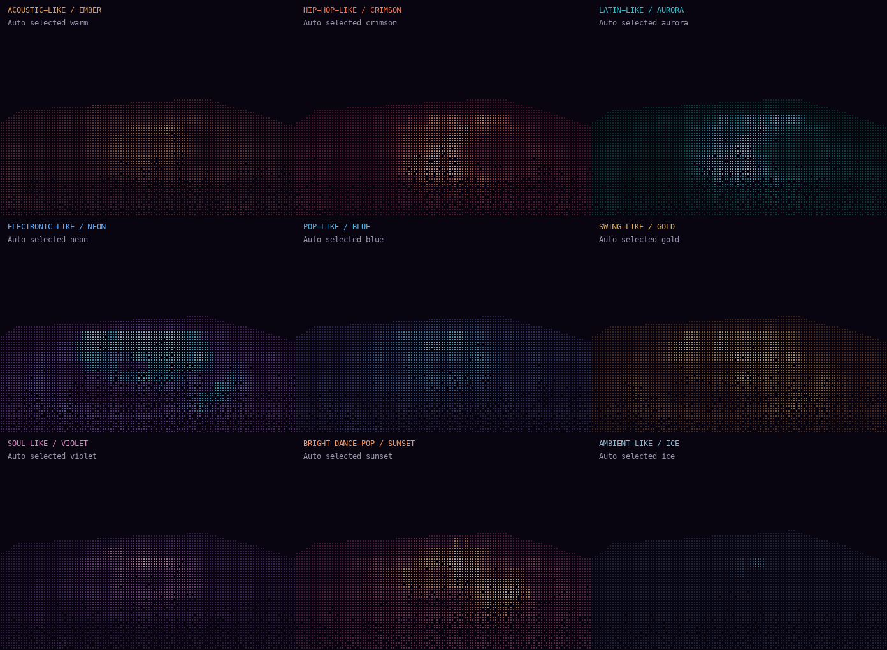

Auto · more of the color wheel
Crimson for sustained sub-bass and dense hats, Aurora for syncopated pitched bass,
Neon for regular broad kicks, and Blue for regular pitched-bass pop-like grooves.
Each panel uses the actual Braille terminal renderer with generated spectra.
Intensity builds, then a moving vocal-like line enters without changing the family.
These are transparent feature examples, not recorded music or a genre-accuracy evaluation.
Animated GIF · Full-size still
All nine automatic families

Default: party. Explicit Auto: party --palette auto.
All analysis is local; no song metadata or player integration. Press p
for Cycle or a fixed palette, and v for complete looks. Genre boundaries
and production overlap: the profiles are heuristics rather than identified genres.
The CAVA capture path and native rasterizer are unchanged.
Earlier bass comparison ·
Earlier visual experiments